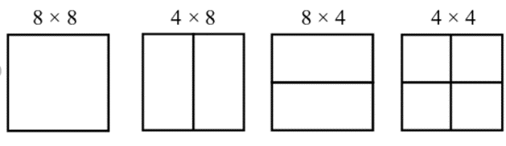
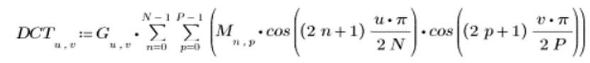

Windows Media Video, o WMV, es un codec de compresión de video desarrollado por Microsoft Corporation para gestionar contenidos de video y aplicaciones de streaming por Internet en ordenadores personales.
2003
En 2003, Microsoft redactó una especificación de compresión de video basada en su formato WMV 9 y la envió a SMPTE para su estandarización.
2006
El estándar fue aprobado oficialmente en marzo de 2006 como SMPTE 421M, más conocido como VC-1 , lo que convierte al formato WMV 9 en un estándar abierto. VC-1 se convirtió en uno de los tres formatos de video para el disco de video Blu-ray , junto con H.262 / MPEG-2 Part 2 y H.264 / MPEG-4 AVC .
Contenedor ASF
Estos archivos utilizan el contenedor ASF (Advanced Systems Format). Este es el contenedor digital de Microsoft para audio y video. En el contenedor se maneja tanto un archivo de audio comprimido como uno de video.
También se puede empaquetar en contenedores Matroska o AVI.
Codec
El codec utilizado para trabajar con el video es WMV (Windows Media Video). Suele emplear el codec WMA para el audio.
Extensión
Los archivos que utilizan el codec WMV tienen una extensión resultante en .wmv
Tamaño reducido
Los archivos WMV ocupan poco espacio, por lo que son altamente usados en sitios web debido a su poco tiempo de carga.
Competencia
Su principal competencia son MPEG-4, AVC, AVS, RealVideo.
Compatabilidad
Aunque fue desarrollado para Windows. debido a software como Flip4Mac y FFmpeg el formato WMV es compatible con Mac y en Linux.
Compresión con pérdida
WMV sufre una pérdida menor en la calidad de imagen para minimizar el tamaño del archivo.
WMV sigue el estándar VC-1 que consiste principalmente en los siguientes pasos:
Separación en macrobloques
Cuando VC-1 codifica una imagen, divide la imagen en macrobloques. Cada macrobloque de 16x16 se compone de 6 bloques de muestra de 8x8 (4 bloques Y, 1 bloque U y 1 bloque V). Además, el método de codificación puede dividir un bloque individual de 8x8 en 2 bloques de 8x4, 2 bloques de 4x8 o 4 bloques de 4x4.
Transformada del Coseno Discreta
Se utiliza la Transformada discreta del coseno para convertir bloques de muestras en un dominio de transformación para facilitar una codificación más eficiente. La transformación puede funcionar en el bloque completo de 8x8 o en cualquiera de los 3 tamaños de subbloque admitidos (8x4, 4x8 o 4x4). A diferencia de muchos estándares de códec que preceden a VC-1, la especificación define un método de transformación con precisión de bit al que se espera que todas las implementaciones se ajusten para minimizar el error de transformación.
Cuantificación
La cuantificación es el paso de compresión que potencialmente pierde la mayor cantidad de información en un esquema de compresión con pérdida como VC-1. Este códec (a diferencia de muchos otros) define una forma directa de escalar los coeficientes mediante el parámetro de cuantificación en lugar de especificar matrices de cuantificación.
Compesación de movimiento
Permite reducir de manera eficiente la redundancia temporal en secuencias de video. Este proceso consiste en tres pasos:
Para cada uno de los macrobloques (MB) de una imagen actual encuentra su mejor emparejamiento (match) de otros MB pertenecientes a una o varias imágenes de referencia. Genera como resultado el vector de movimiento MV={mvx, mvy}.
El mejor match encontrado constituye la predicción de ese MB. Ambos MB se restan para obtener el MB residual, proceso conocido como compensación de movimiento.
Finalmente, ese MB residual es codificado y comprimido junto con su MV.
Codificación de entropía (mediante el algoritmo de Huffman)
El principio básico es utilizar un código de longitud variable, asignando las palabras de código de menor longitud a los niveles de gris más probables.
Para esto se genera un árbol de codificación Huffman mediante los siguientes pasos:
Ordenar la lista de símbolos de datos en orden de probabilidad creciente.
Combinar los dos símbolos de menor probabilidad en un nudo y asignar la probabilidad conjunta de estos símbolos al nudo.
Reordenar los restantes símbolos de datos y nudos en orden de probabilidad creciente y repetir el paso 2, hasta llegar al nudo raíz: